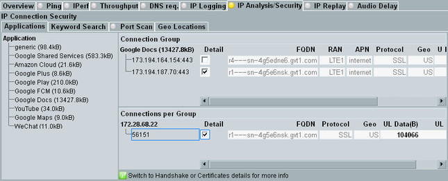
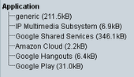
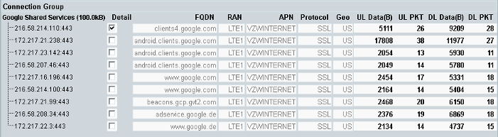
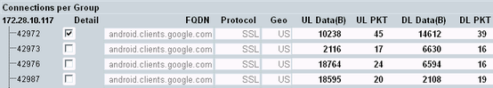

The "Applications" tab provides an overview of all observed IP connections. It groups the connections for easier analysis, according to applications and destinations. For SSL/TLS connections, you can select a single connection and display handshake and certificate information.

Navigate within the tab as follows:
Select an application on the left.
The area "Connection Group" on the right lists the connection groups for the selected application.
Select a connection group (checkbox in column "Detail").
The area "Connections per Group" below lists all connections of the selected group.
Select a connection (checkbox in column "Detail").
One or two hotkeys are displayed. The checkbox is only available if there is handshake or certificate information for the connection.
Press the hotkey "SSL/TLS Handshake" or "SSL/TLS Certificates".
The handshake or certificates information is displayed for the selected connection.
The areas of the "Applications" tab are described in the following.
The area on the left lists all applications resulting from the IP packet analysis on the application layer.

The information in the brackets indicates the total layer 3 data exchanged in UL plus DL direction per application, since the measurement is running.
Remote command:The area lists all connection groups for the application selected on the left.

There is one line per connection group. The columns list the following information.
First column | Destination address and destination port, for example 216.58.210.8:443. The application is listed above the first line. |
"Detail" | Selects one connection group for the display of details in the lower part. |
"FQDN" | Fully qualified domain name of the destination |
"RAN" | Used radio access network, typically a signaling application instance like "LTE1" |
"APN" | Access point name |
"Protocol" | Used protocol, for example SSL or HTTP SSL means here SSL or TLS. If the connections of the group use different protocols, an asterisk * is displayed. |
"Geo" | Country of the destination, as two-letter country code (ISO 3166-1) |
"UL/DL Data" | Layer 3 UL or DL data exchanged via the group, since the measurement is running (in bytes). |
"UL/DL PKT" | Number of packets exchanged via the group, since the measurement is running. |
The area lists all connections for the group selected in the upper part.
All connections of a group use the same IP address at the DUT side, but different port numbers.

There is one line per connection. The columns have the following meaning.
First column | Port used at the DUT side. The IP address of the DUT is listed above the first line. |
"Detail" | Selects one connection for the display of details, see "Hotkeys". The checkbox is only available if there is handshake or certificate information for the connection. |
Remaining columns | Same information as in the "Connection Group" area, per connection instead of per connection group |
The following hotkeys are specific for the "Applications" tab.
The hotkeys are only present, if you select a connection in the "Connections per Group" area, column "Detail". If there is no handshake information or no certificate information, the corresponding hotkey is hidden.
While one of these views is open, the hotkey "Back to connection info" is shown, for return to the "Applications" tab.